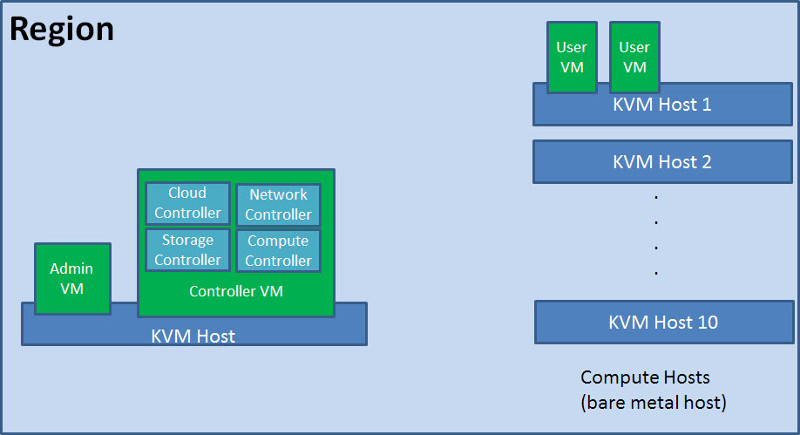
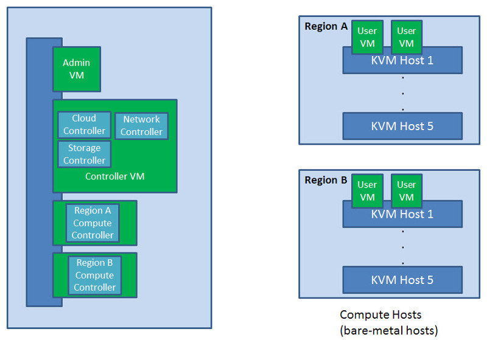
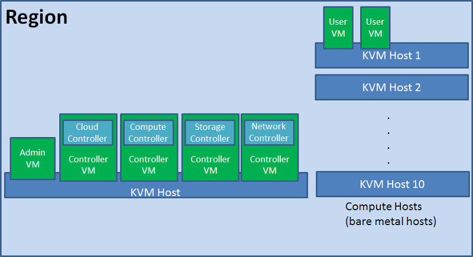
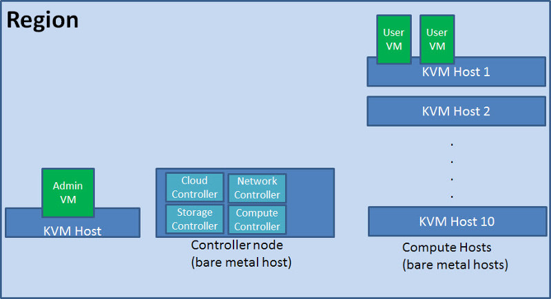
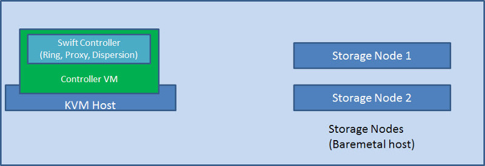

HP Cloud OS Support Matrix for Hardware and Software
This document provides an overview of the supported hardware and software for the HP Cloud OS Sandbox Version 1.20, including information for hardware and software setup.
Server Infrastructure
For the performance and stability of the HP Cloud OS environment, it is very important to meet the minimum recommendations for memory, processors, and disk space for each of the components in the table below. Before installation, please reference the appropriate platform support matrix for each component product.
Prerequisites
Ubuntu Server 12.04 LTS installation media + security updates.
Minimum Recommendations
| Node Type | Virtual/Physical Node | CPU Cores | Memory | Internal Storage | NICs | |
|---|---|---|---|---|---|---|
| Admin Node | Virtual Only | 4 * | 16 GB * | 20 GB | 2 | |
| Controller Node | Virtual and Physical | 4 | 32 GB | 60 GB | 1 ** | Ubuntu Server 12.04 LTS (64-bit) |
| Compute Node | Physical Only | 4 *** | 32 GB | 60 GB | 1 | Ubuntu Server running KVM hypervisor 12.04 LTS (64-bit) |
| Swift Controller (Ring, Proxy, Dispersion) | Virtual or Physical | 8 | 12 GB | 20 GB | 3 | Ubuntu Server 12.04 LTS (64-bit) |
| Storage Node | Virtual or Physical | 8 | 12 GB | 60 GB | 3 | Ubuntu Server 12.04 LTS (64-bit) |
* For the Admin Node, the CPU and memory should be dedicated to this VM and not shared with other virtual machines on the same KVM host.
** External Internet connection required for public or hybrid cloud.
*** Intel or AMD hardware virtualization support required. The CPU cores and memory requirements must be sized based on the VM instances hosted by the compute node.
Supported Deployment Scenarios
The diagrams in this section illustrate the deployment scenarios supported in HP Cloud OS 1.20.
Diagram 1: Single Region. All controllers in a single virtual machine. Compute node is baremetal.

Diagram 2: Multi-region. All controllers in virtual machines.

Diagram 3: Single region. Controllers are in separate virtual machines.

Diagram 4: Single region. All controllers in a single baremetal server.

Diagram 5: Supported Swift (Object Store) deployment scenario

Hardware Requirements
| HP |
|---|
| ProLiant DL360p Gen8 |
| ProLiant DL380p Gen7 |
| BladeSystem c7000 - ProLiant BL490c Gen6 |
| BladeSystem c7000 - ProLiant BL490c Gen7 |
| BladeSystem c7000 - ProLiant BL460c Gen8 |
| Dell |
| Dell R620CTL |
| M100E - PowerEdge M620 |
| IBM |
| IBM x3550 M4 CTL |
| BladeCenter S - IBM Blade Center HS23 |
Software Requirements
Refer to Install & Configure Your Cloud for a complete list of installation prerequisites and requirements, plus step-by-step instructions.
| HP Cloud OS Platforms | Supported Versions |
|---|---|
| Admin and Controller Node | |
| Operating System | |
| Ubuntu Linux | 12.04 LTS (64-bit) + security updates |
| |
1.7 |
| Database | |
| CouchDB | 1.2.0 |
| PostgreSQL | 9.1.5 |
| Application Server | |
| Apache httpd | 2.3 and above |
| Tomcat | 7 |
| Web Browser | |
| Internet Explorer | 10 |
| Firefox | 25 and above |
| Chrome | 30 and above |
| Kernel | |
| OpenStack release | Grizzly 2013.1.4 |
| OpenStack Components and Plugins | |
| Cinder | Grizzly 2013.1.4 |
| Cinder plugin: LVM-iSCSI | Grizzly 2013.1.4 |
| Glance | Grizzly 2013.1.4 |
| Glance plugin: Filesystem Persistence | Grizzly 2013.1.4 |
| Keystone | Grizzly 2013.1.4 |
| Keystone plugin: Database Store | Grizzly 2013.1.4 |
| Nova | Grizzly 2013.1.4 |
| Nova plugin: KVM | Grizzly 2013.1.4 |
| Quantum (Neutron) | Grizzly 2013.1.4 |
| Quantum (Neutron) plugin: Open vSwitch | Grizzly 2013.1.4 |
| Horizon | Grizzly 2013.1.4 |
| Python | 2.6, 2.7 |
| Swift | Grizzly 2013.1.4 |
| Base | |
| Graffiti | HP Cloud OS 1.20 |
| Eve | HP Cloud OS 1.20 |
| Plug-in: CouchDB 1.2.0 Persistence Plug-in: MongoDB 2.2 Persistence |
HP Cloud OS 1.20 |
| Focus | HP Cloud OS 1.20 |
| Plug-in: FileSystem Persistence | HP Cloud OS 1.20 |
| Deployment | |
| HP Cloud OS Operational Dashboard | HP Cloud OS 1.20 |
| HP Cloud OS Installation Dashboard | HP Cloud OS 1.20 |
| Crowbar | 1.4 |
| Message Queue | |
| RabbitMQ | 2.7.1 and above |
| Supported Hypervisors for hosting Admin node | |
| KVM QEMU ESXi (Admin node only) |
Ubuntu 12.04 LTS (64-bit) |
| Cloud Providers | HP Cloud Compute Service v12.12 |